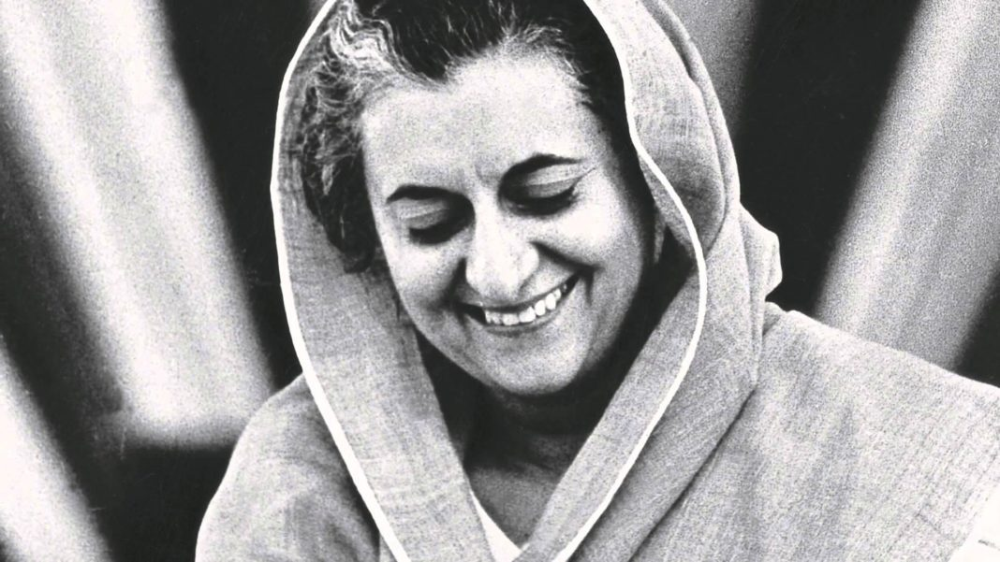

Iron lady
“You can't shake hands with a clenched fist.”
Indira Priyadarshini Gandhi (19 November 1917 - 31 October 1984) was an Indian politician and stateswoman who served as the 3rd Prime Minister of India from 1966 to 1977 and again from 1980 until her assassination in 1984
She was India's first and, to date, only female prime minister, and a central figure in Indian politics as the leader of the Indian National Congress. Gandhi was the daughter of Jawaharlal Nehru, the first prime minister of India, and the mother of Rajiv Gandhi, who succeeded her in office as the country's sixth prime minister.
Furthermore, Gandhi's cumulative tenure of 15 years and 350 days makes her the second-longest-serving Indian prime minister after her father.
In 1952 in a letter to her American friend Dorothy Norman, Gandhi wrote:
"I am in no sense a feminist, but I believe in women being able to do everything,Given the opportunity to develop, capable Indian women have come to the top at once."
While this statement appears paradoxical, it reflects Gandhi's complex feelings toward her gender and feminism. Her egalitarian upbringing with her cousins helped contribute to her sense of natural equality.
"Flying kites, climbing trees, playing marbles with her boy cousins, Indira said she hardly knew the difference between a boy and a girl until the age of twelve."
Indira Gandhi, a trailblazing leader and the first female Prime Minister of India, left an enduring legacy through her political prowess and commitment to social justice.
The Indira Gandhi National Open University, the largest university in the world, is also named after her. Indian National Congress established the annual Indira Gandhi Award for National Integration in 1985, given in her memory on her death anniversary. The Indira Gandhi Memorial Trust also constituted the annual Indira Gandhi Prize.